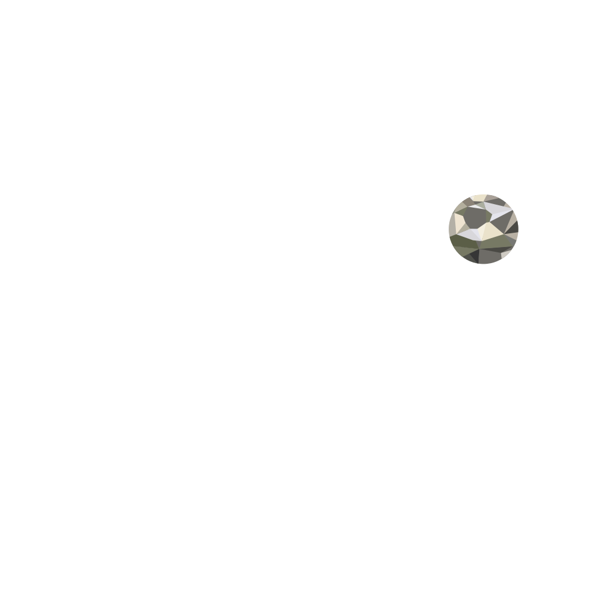
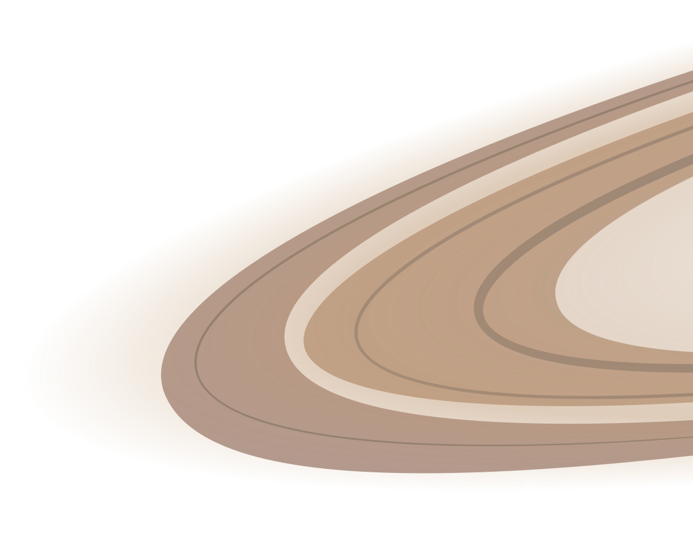
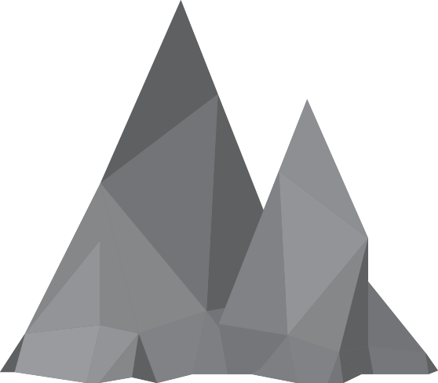
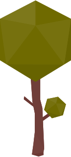

Statistics



1.4 billion tons of food is wasted across the globe each year
Just one quarter of all wasted food could feed all the 795 million people suffering from hunger
Food waste generates 4.4 gigatons tons of carbon dioxide, which accelerates global climate change

In developing countries, 40% of losses occur at the post-harvest and processing stages, while in developed countries, more than 40% of losses occur at the retail and consumer levels.
In the US, organic waste is the largest source of methane emissions.
An area larger than China and 25% of the world’s fresh water supply is used to grow food that is never eaten.

